En Red Dead Redemption 2, cada rincón del mapa cuenta una historia.
Desde las ciudades modernas que anuncian el avance de la
civilización hasta los pueblos polvorientos olvidados por el tiempo,
el mundo que rodea a Arthur Morgan es vasto, vivo y en constante
cambio. Cada ubicación tiene su propio carácter: algunos lugares
rebosan actividad y comercio, mientras que otros esconden secretos,
tragedias y leyendas que definen el ocaso del Salvaje Oeste.
Explorar estas tierras no es solo viajar, es descubrir un mundo al
borde de su transformación final.
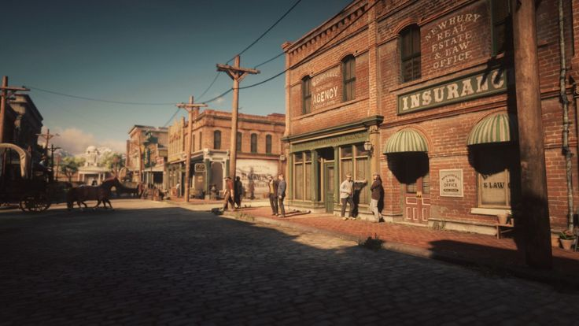
Blackwater
Una ciudad moderna en un mundo que aún lucha por cambiar.
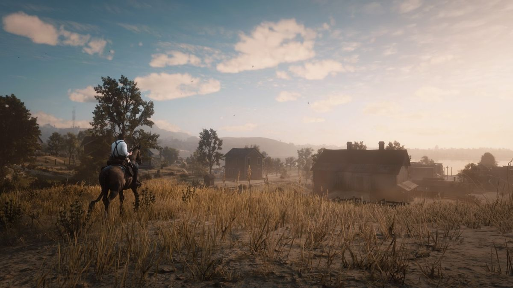
Atardecer en Blackwater
Calles limpias, edificios altos y un futuro inevitable.
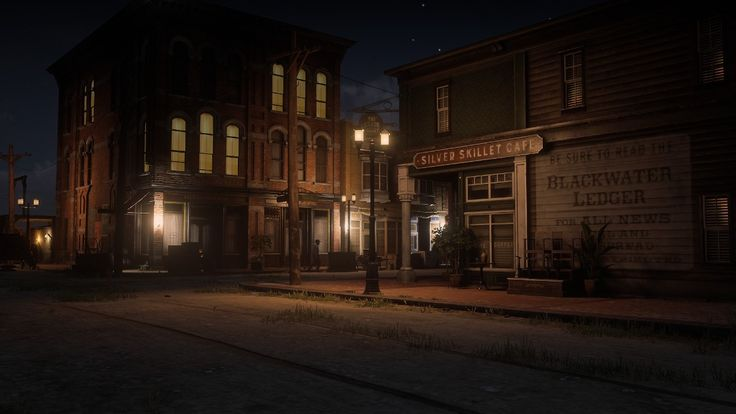
Blackwater por la noche
Una ciudad llena de vida… y secretos del pasado.
Blackwater
Blackwater es una de las ciudades más modernas y civilizadas del
Oeste, situada en el corazón de West Elizabeth. Su arquitectura
ordenada, sus calles limpias y su creciente presencia de la ley la
convierten en un símbolo del avance hacia una nueva era, lejos del
caos y la brutalidad del Salvaje Oeste. Representa el progreso,
aunque para muchos forajidos es también un recordatorio de que el
mundo al que pertenecen está desapareciendo.
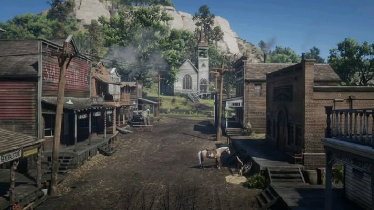
Valentine
Un pueblo ganadero lleno de vida, conflictos y polvo del
camino.
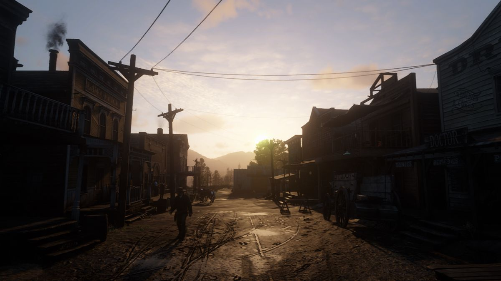
Atardecer en Valentine
Entre establos, salones y caos, siempre hay algo pasando
aquí.
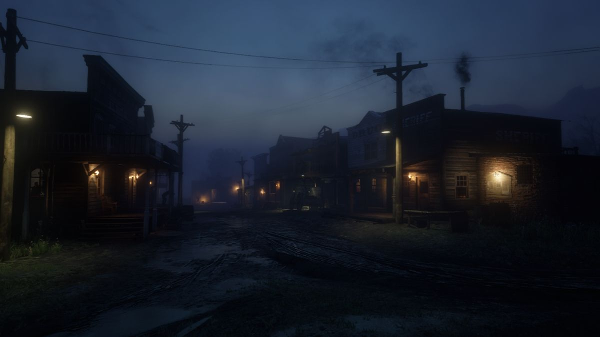
Vida en el pueblo
El corazón agreste del Oeste: ruido, barro y pura
autenticidad.
Valentine
Valentine es un pueblo ganadero rústico y bullicioso ubicado en The
Heartlands. Aunque pequeño, siempre está lleno de vida: vaqueros,
comerciantes, borrachos del saloon y trabajadores del establo dan
forma a un ambiente sucio, ruidoso y a veces peligroso. Es uno de
los primeros lugares donde Arthur desarrolla actividades
importantes, por lo que rápidamente se convierte en un escenario
familiar.
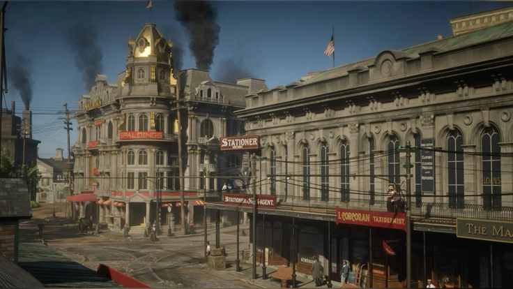
Saint Denis
La joya industrial del Este, un hervidero de vida, comercio
y humo.
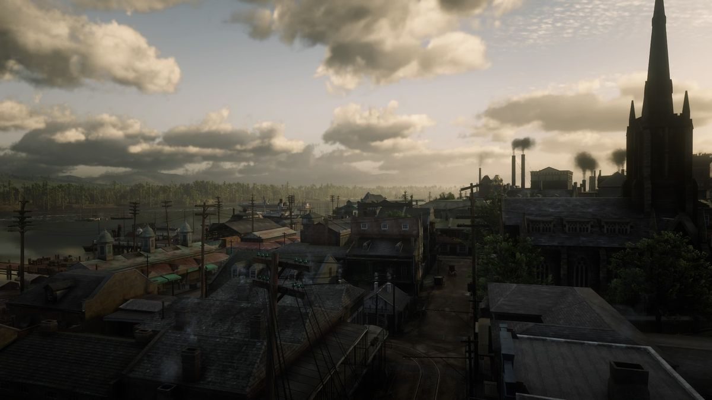
Calles de la ciudad
Tranvías, luces y un bullicio constante marcan el ritmo de
este centro urbano.
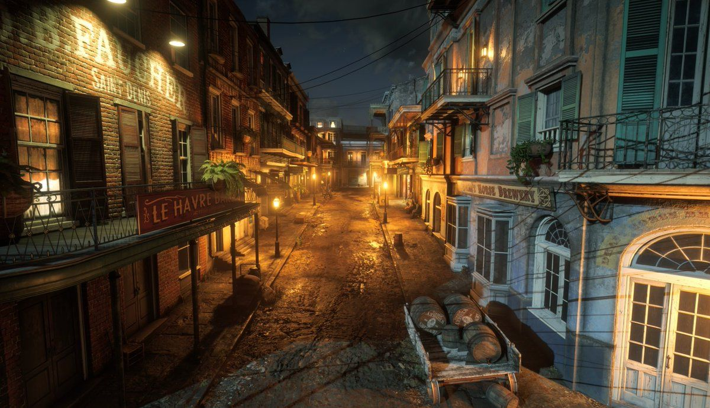
Noche en Saint Denis
Entre teatros, bares elegantes y callejones sombríos, la
ciudad esconde mil historias.
Saint Denis
Saint Denis es la joya más espectacular del mundo de RDR2, una
metrópolis multicultural inspirada en Nueva Orleans que combina
lujo, pobreza, industria y corrupción. Es el punto más alto de la
modernización dentro del juego: tranvías eléctricos, barrios
elegantes, grandes teatros, mansiones, burdeles, factorías y una
densa mezcla de culturas que conviven a veces a la fuerza.
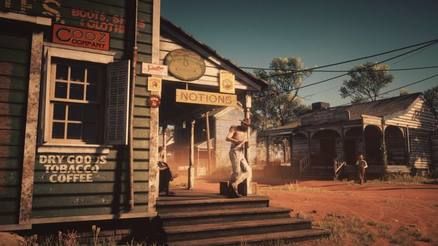
Rhodes
Un pueblo sureño aparentemente tranquilo, marcado por viejas
rivalidades.
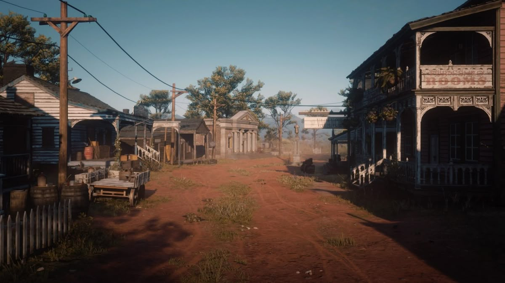
Plaza de Rhodes
Bajo su calma, se esconde la tensión constante entre los
Gray y los Braithwaite.
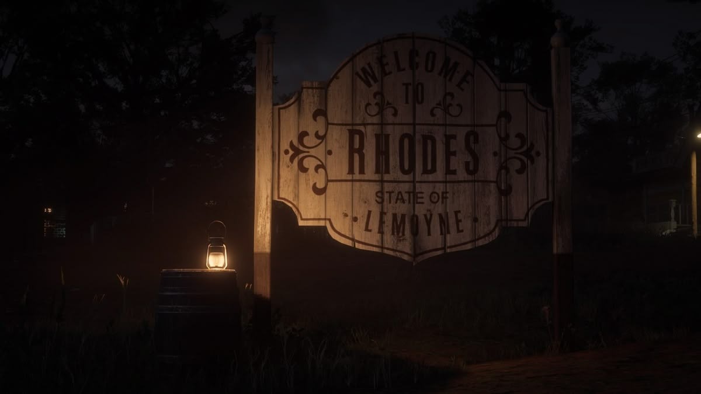
Atmósfera del Sur
El calor, el polvo y las plantaciones cercanas dan forma a
su identidad.
Rhodes
Rhodes parece un pueblo sureño tranquilo y elegante, pero su fachada
esconde uno de los conflictos más sangrientos e históricos del
juego: la rivalidad entre las familias Braithwaite y Gray. Su
arquitectura sureña, plantaciones, clima cálido y campos de tabaco
evocan un pasado marcado por tensiones raciales, traiciones y
cicatrices de la Guerra Civil.
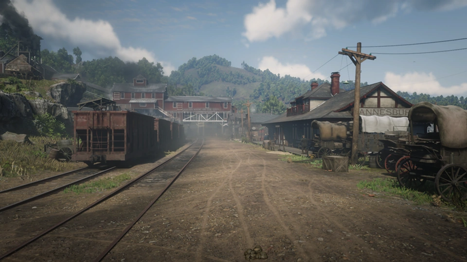
Annesburg
Una ciudad minera dura y llena de sufrimiento, donde cada
día es una lucha por sobrevivir.
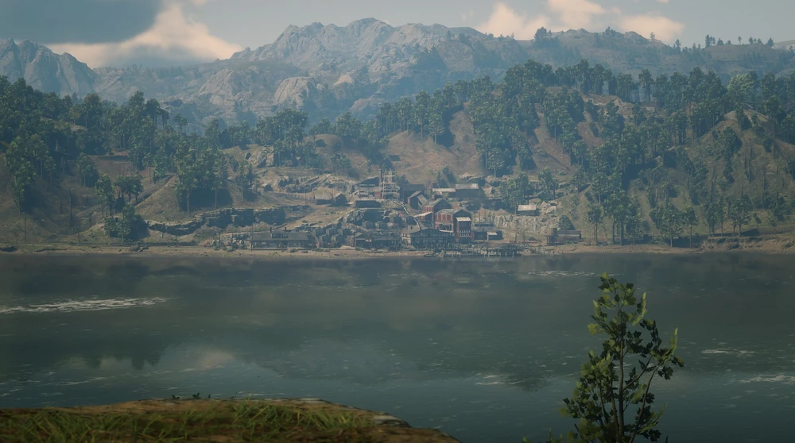
Mina de Carbón
El corazón del pueblo late entre túneles oscuros, humo y
condiciones inhumanas de trabajo.
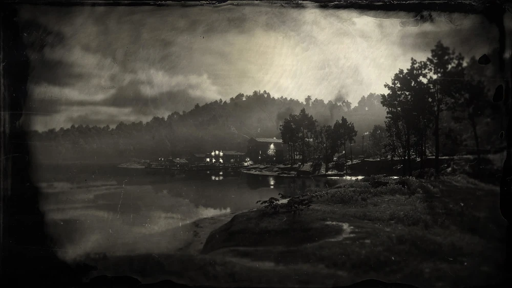
Borde del Río Kamassa
Entre barcos, niebla y maquinaria, la ciudad refleja el lado
más crudo de la industrialización.
Annesburg
Annesburg es un asentamiento minero ubicado en Roanoke Ridge, al
noreste del mapa. Es uno de los lugares más sombríos del juego,
dominado por la pobreza, el humo del carbón y la explotación
laboral. La ciudad vive al ritmo de sus minas, donde trabajadores
exhaustos, muchos de ellos inmigrantes pobres, arriesgan su vida
cada día en condiciones inhumanas. Annesburg representa el lado más
cruel de la industrialización y muestra cómo el progreso puede
devorar a quienes quedan atrapados en él.